Code
library(readr)
insurance <- read_csv("../data/insuranceKaggle.csv")By the end of this chapter, students should be able to:
yardstick package.metric_set() to evaluate regression models using multiple performance metrics.In the previous chapters, we used data science tools to explore and understand insurance data. We learned how to inspect a dataset, transform and summarize variables using dplyr, and visualize distributions and relationships using ggplot2. These steps are important because statistical modelling should begin with an understanding of the data rather than with fitting a model immediately.
The data science workflow can therefore be viewed as:
\[ \text{Inspect data} \rightarrow \text{Transform and summarize} \rightarrow \text{Visualize} \rightarrow \text{Build a model} \rightarrow \text{Evaluate and interpret}. \]
In this chapter, we take the next step by using the patterns identified during data exploration to build and fit a statistical model. We will use the tidymodels framework to build a linear regression model and use it to describe relationships between an outcome and one or more explanatory variables.
We begin with linear regression because it provides a relatively simple introduction to statistical modelling. The model is easy to visualize and interpret, while introducing several ideas that are fundamental to more advanced models: response and predictor variables, model parameters, fitted values, residuals, model assumptions, prediction, and model evaluation. Linear regression also provides a useful foundation for understanding more flexible models that we will encounter later.
We will work with a dataset of insurance charges, containing demographic and lifestyle information such as age, sex, BMI, smoking status, and region, together with the medical charges billed to insurance. We will first consider a simple linear regression model and then extend it to multiple linear regression, where several predictors are considered simultaneously.
An important distinction in this chapter is that regression can be used for different purposes. From a statistical perspective, we may be interested in understanding and quantifying associations between variables. From a predictive perspective, we may instead be interested in how accurately the model predicts the outcome for new observations. The same regression model can be used for both purposes, but the way we build, evaluate, and interpret the model can differ.
tidymodels?tidymodels provides a consistent framework for modelling that follows the same general philosophy as the tidyverse tools used in the earlier chapters. Rather than treating model fitting as a single function call, it provides a structured workflow for specifying, fitting, evaluating, and using models. This becomes increasingly useful as models become more complicated and as we move from simple statistical analysis toward predictive modelling.
For a simple linear regression, we could use base R directly:
lm(charges ~ age, data = insurance)This is perfectly valid and is often the simplest approach when the main goal is to fit and interpret a single statistical model. In this course, however, we use tidymodels because it provides a modelling workflow that can be extended naturally to model evaluation, prediction, multiple models, and more advanced modelling methods.
lm()?
Base R provides lm() for fitting linear regression models directly. It is an excellent tool for statistical analysis, and we will use it indirectly because tidymodels can use the "lm" engine.
The purpose of using tidymodels here is not that lm() is inadequate. Rather, tidymodels introduces a consistent modelling workflow that will be useful when we move beyond a single linear regression model.
The chapter therefore builds on the skills developed earlier:
\[ \boxed{ \text{Transform} \rightarrow \text{Summarize} \rightarrow \text{Visualize} \rightarrow \text{Model} \rightarrow \text{Evaluate} } \]
The goal is not only to learn the syntax for fitting a regression model, but to understand where modelling fits within the broader data science process and how regression can be used to answer questions arising from insurance data.
For more information about the tidymodels framework and its ecosystem of packages, visit the official tidymodels website.
I would simplify this section and make it consistent with the project structure you have used in the earlier chapters. In particular, students should not need to modify a personal file path. Since the dataset is in the project’s data/ folder, a relative path is more appropriate.
I would also introduce charges explicitly as the response variable, since this becomes important in the next section.
We will use a dataset of insurance charges, which we will call insurance. The data are stored in the project’s data folder in the file insuranceKaggle.csv.
The dataset contains information about policyholders and the medical charges billed to their insurance:
| Variable | Description |
|---|---|
age |
Age of the policyholder, in years |
sex |
Sex of the policyholder (male or female) |
bmi |
Body mass index |
smoker |
Whether the policyholder is a smoker (yes or no) |
region |
Residential region (northeast, northwest, southeast, or southwest) |
children |
Number of children (dependents) covered by the policy |
charges |
Medical costs billed to insurance |
In this chapter, charges will be the response variable (or outcome), and the other variables will be considered as potential predictors (or explanatory variables).
We begin by loading the data into R using read_csv() from the readr package:
library(readr)
insurance <- read_csv("../data/insuranceKaggle.csv")The dataset can then be inspected using the functions we have already learned:
library(dplyr)
glimpse(insurance)Rows: 1,338
Columns: 7
$ age <dbl> 19, 18, 28, 33, 32, 31, 46, 37, 37, 60, 25, 62, 23, 56, 27, 1…
$ sex <chr> "female", "male", "male", "male", "male", "female", "female",…
$ bmi <dbl> 27.900, 33.770, 33.000, 22.705, 28.880, 25.740, 33.440, 27.74…
$ children <dbl> 0, 1, 3, 0, 0, 0, 1, 3, 2, 0, 0, 0, 0, 0, 0, 1, 1, 0, 0, 0, 0…
$ smoker <chr> "yes", "no", "no", "no", "no", "no", "no", "no", "no", "no", …
$ region <chr> "southwest", "southeast", "southeast", "northwest", "northwes…
$ charges <dbl> 16884.924, 1725.552, 4449.462, 21984.471, 3866.855, 3756.622,…We can also obtain a quick summary of the variables:
summary(insurance) age sex bmi children
Min. :18.00 Length:1338 Min. :15.96 Min. :0.000
1st Qu.:27.00 Class :character 1st Qu.:26.30 1st Qu.:0.000
Median :39.00 Mode :character Median :30.40 Median :1.000
Mean :39.21 Mean :30.66 Mean :1.095
3rd Qu.:51.00 3rd Qu.:34.69 3rd Qu.:2.000
Max. :64.00 Max. :53.13 Max. :5.000
smoker region charges
Length:1338 Length:1338 Min. : 1122
Class :character Class :character 1st Qu.: 4740
Mode :character Mode :character Median : 9382
Mean :13270
3rd Qu.:16640
Max. :63770 At this stage, the objective is simply to become familiar with the data. We will use the data exploration and visualization techniques introduced in the previous chapters before deciding how to construct our regression model.
Before building a model, we first explore how the response variable, charges, is related to the potential predictors. This continues the workflow introduced in the previous chapters:
\[ \text{Transform and summarize} \rightarrow \text{Visualize} \rightarrow \text{Interpret} \rightarrow \text{Model}. \]
Visualization helps us identify patterns, trends, differences between groups, and unusual observations. These observations can guide our choice of predictors and help us decide which relationships are worth investigating further.
The type of plot we use depends on the type of predictor.
age or bmi, we can use a scatter plot with the predictor on the horizontal axis and charges on the vertical axis. This allows us to examine whether charges tend to increase, decrease, or follow some other pattern as the predictor changes.smoker, sex, or region, we can use a boxplot to compare the distribution of charges across groups.We can also use colour to examine whether the relationship between two numeric variables differs across groups. For example, colouring an age-versus-charges scatter plot by smoker allows us to examine whether the relationship between age and charges appears different for smokers and non-smokers.
The purpose of this exploration is not to prove that a predictor is important or unimportant. Instead, we are looking for patterns that may help us formulate a useful regression model. A variable that appears weak when considered by itself may still provide useful information when other predictors are included in a multiple regression model.
age is a numeric predictor, so we use a scatter plot to examine its relationship with charges.
library(ggplot2)
ggplot(insurance, aes(x = age, y = charges)) +
geom_point(alpha = 0.6) +
labs(
title = "Insurance Charges by Age",
x = "Age",
y = "Charges"
)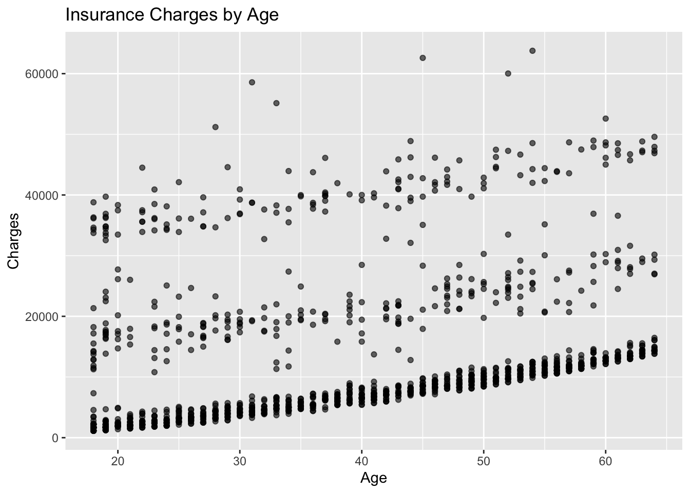
Interpretation: The plot suggests a positive relationship between age and charges: older policyholders tend to have higher medical charges. However, the relationship is not perfectly linear, and there is substantial variation in charges among policyholders of similar ages.
This is an important observation for regression. A predictor can have a clear overall relationship with the response even when individual observations vary considerably around that relationship.
A regression model describes the general relationship between a predictor and a response; it does not imply that individual observations will follow that relationship exactly.
For example, suppose two 50-year-old policyholders have medical charges of $8,000 and $25,000. This does not contradict a positive relationship between age and charges. It simply shows that age does not explain all of the variation in medical charges. Other factors, such as BMI, smoking status, and number of children, may also affect charges.
Thus, when we fit a regression model, we expect observations to vary around the fitted line rather than lie exactly on it.
bmi is also a numeric predictor, so we again use a scatter plot.
ggplot(insurance, aes(x = bmi, y = charges)) +
geom_point(alpha = 0.6) +
labs(
title = "Insurance Charges by BMI",
x = "BMI",
y = "Charges"
)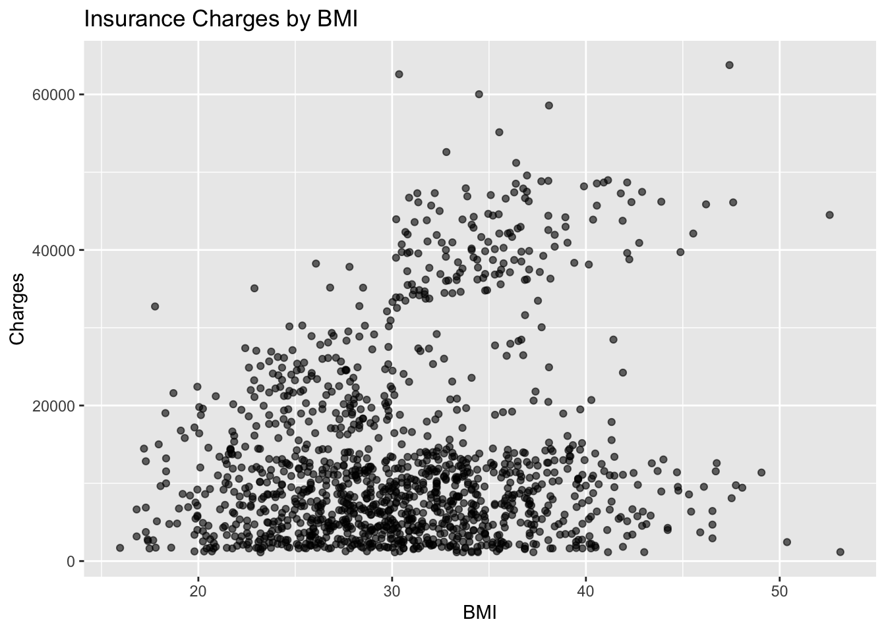
Interpretation: There appears to be a positive association between BMI and charges, although the relationship is less clear than the relationship between age and charges. The plot also suggests that the relationship may differ across groups, which we will investigate later.
smoker is a categorical predictor with two groups. A boxplot allows us to compare the distributions of charges between smokers and non-smokers.
ggplot(insurance, aes(x = smoker, y = charges, fill = smoker)) +
geom_boxplot(alpha = 0.7) +
labs(
title = "Insurance Charges by Smoking Status",
x = "Smoker",
y = "Charges"
)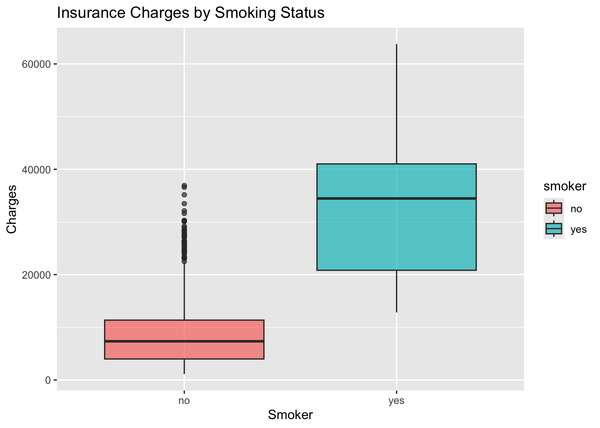
Interpretation: There is a substantial difference in the distribution of charges between smokers and non-smokers. Smokers tend to have much higher charges.
This suggests that smoker may be an important predictor of charges. Because smoker is categorical, it will later be represented in the regression model using indicator variables.
sex is another categorical predictor.
ggplot(insurance, aes(x = sex, y = charges, fill = sex)) +
geom_boxplot(alpha = 0.7) +
labs(
title = "Insurance Charges by Sex",
x = "Sex",
y = "Charges"
)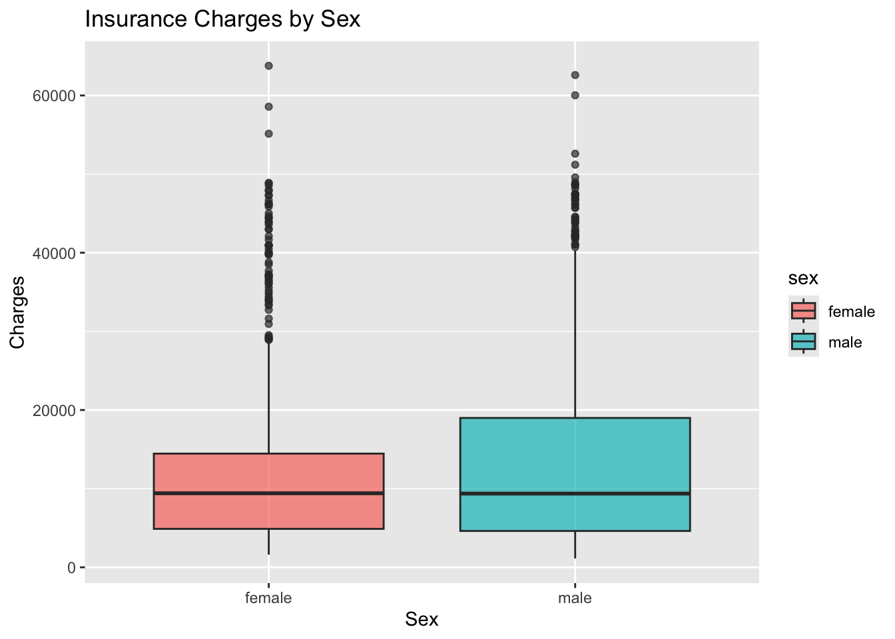
Interpretation: The distributions of charges for the two sex groups appear broadly similar. There does not appear to be a strong marginal relationship between sex and charges in this plot.
However, this does not mean that sex has no effect in a regression model. Its contribution may change after other predictors are taken into account.
region is a categorical predictor with four groups.
ggplot(insurance, aes(x = region, y = charges, fill = region)) +
geom_boxplot(alpha = 0.7) +
labs(
title = "Insurance Charges by Region",
x = "Region",
y = "Charges"
)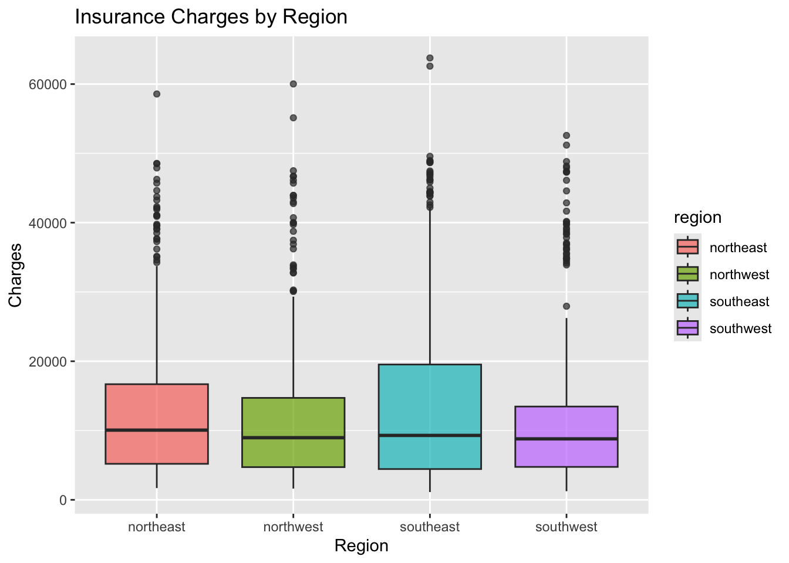
Interpretation: The distributions of charges across the four regions appear relatively similar, although there may be some differences in their centres and variability. The plot does not suggest a strong relationship between region and charges when considered on its own.
The visual exploration gives us an initial understanding of the potential predictors:
| Predictor | Type | Relationship with charges |
Initial assessment |
|---|---|---|---|
age |
Numeric | Positive association | Promising |
bmi |
Numeric | Positive association | Promising |
smoker |
Categorical | Large difference between groups | Strong predictor candidate |
sex |
Categorical | Relatively small difference | Less promising on its own |
region |
Categorical | Relatively small differences | Less promising on its own |
These observations provide a starting point for model building. However, visual exploration alone is not sufficient for feature selection. In particular, predictors can be related to one another, and the apparent relationship between a predictor and charges may change when other predictors are included.
In the next sections, we will first fit a simple linear regression model and then extend it to multiple linear regression. This will allow us to investigate relationships while considering several predictors simultaneously.
Use the plots above as examples and create your own visualizations.
Create a scatter plot of age versus charges, coloured by smoker. What does the plot suggest about the relationship between age and charges for smokers and non-smokers?
Create a scatter plot of bmi versus charges, coloured by smoker. What pattern do you observe?
Create a scatter plot of age versus charges, coloured by sex. Does the relationship appear substantially different between the two groups?
Create a scatter plot of bmi versus charges, coloured by sex. Comment on the patterns you observe.
Create a scatter plot of age versus charges, coloured by region. Are there noticeable differences across regions?
Create a scatter plot of bmi versus charges, coloured by region. What do you observe?
Based on your visual exploration, which predictors would you initially consider for a regression model? Explain your reasoning.
The following solutions illustrate one reasonable approach to the exercises. The interpretation of a plot may vary slightly depending on how the relationship is described.
ggplot(insurance, aes(x = age, y = charges, colour = smoker)) +
geom_point(alpha = 0.6) +
labs(
title = "Insurance Charges by Age and Smoking Status",
x = "Age",
y = "Charges",
colour = "Smoker"
)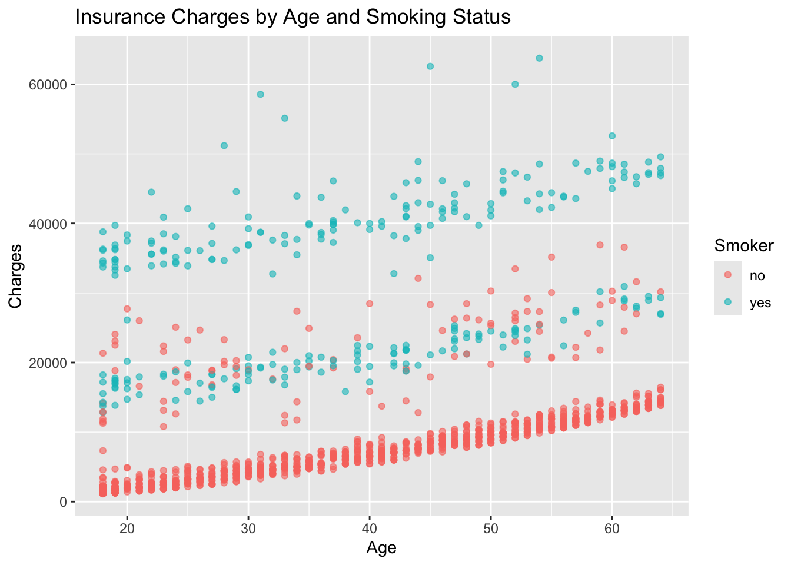
Interpretation: Charges generally increase with age. The relationship is particularly pronounced among smokers, whose charges tend to be substantially higher than those of non-smokers.
ggplot(insurance, aes(x = bmi, y = charges, colour = smoker)) +
geom_point(alpha = 0.6) +
labs(
title = "Insurance Charges by BMI and Smoking Status",
x = "BMI",
y = "Charges",
colour = "Smoker"
)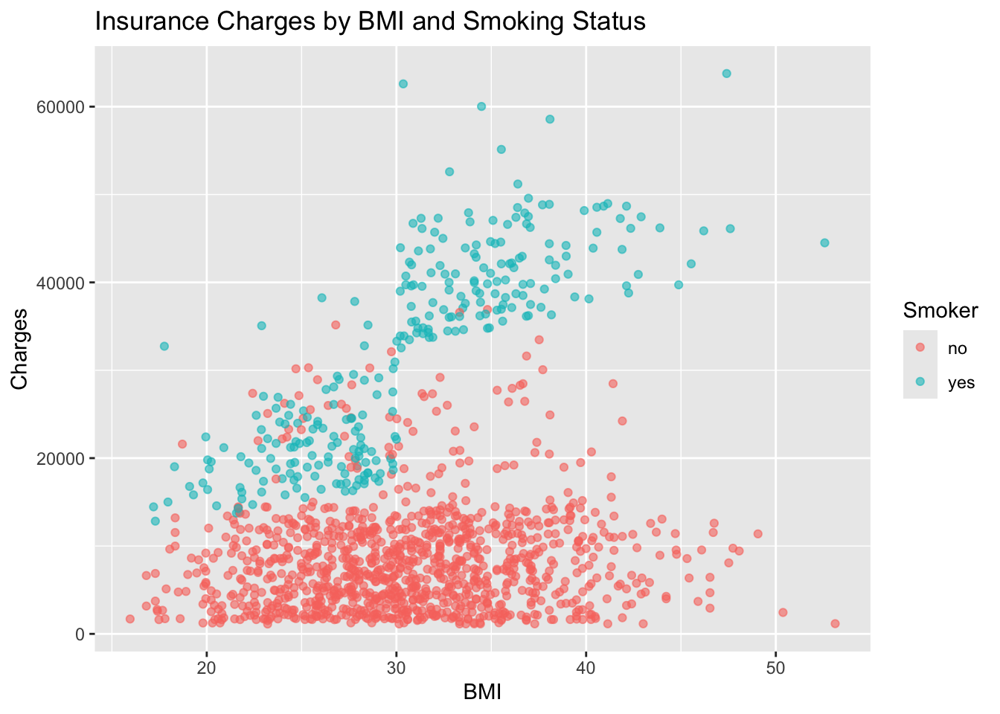
Interpretation: BMI has a positive association with charges, although the relationship is less clear than for age. Smoking status creates a substantial separation between the groups.
ggplot(insurance, aes(x = age, y = charges, colour = sex)) +
geom_point(alpha = 0.6) +
labs(
title = "Insurance Charges by Age and Sex",
x = "Age",
y = "Charges",
colour = "Sex"
)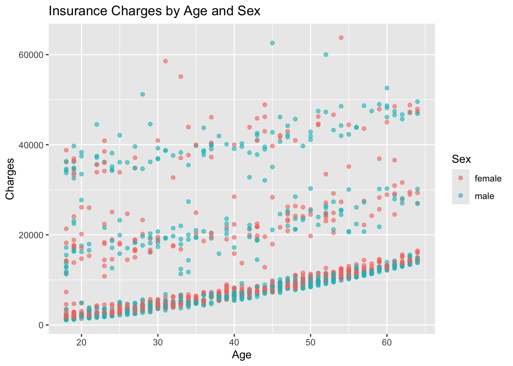
Interpretation: Charges tend to increase with age for both groups. The two groups show considerable overlap, suggesting that sex has a relatively weak marginal relationship with charges.
ggplot(insurance, aes(x = bmi, y = charges, colour = sex)) +
geom_point(alpha = 0.6) +
labs(
title = "Insurance Charges by BMI and Sex",
x = "BMI",
y = "Charges",
colour = "Sex"
)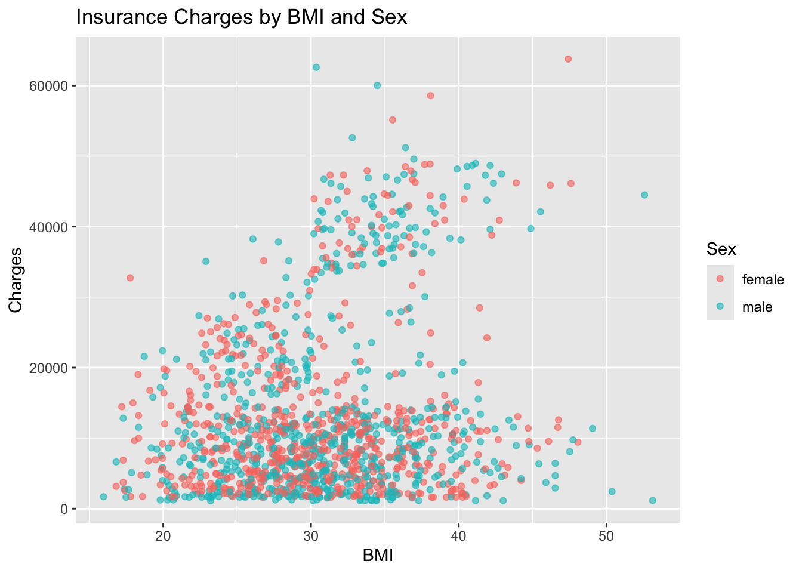
Interpretation: There is some positive association between BMI and charges, but the two sex groups overlap substantially. There is no strong visual evidence of a large difference between the groups.
ggplot(insurance, aes(x = age, y = charges, colour = region)) +
geom_point(alpha = 0.6) +
labs(
title = "Insurance Charges by Age and Region",
x = "Age",
y = "Charges",
colour = "Region"
)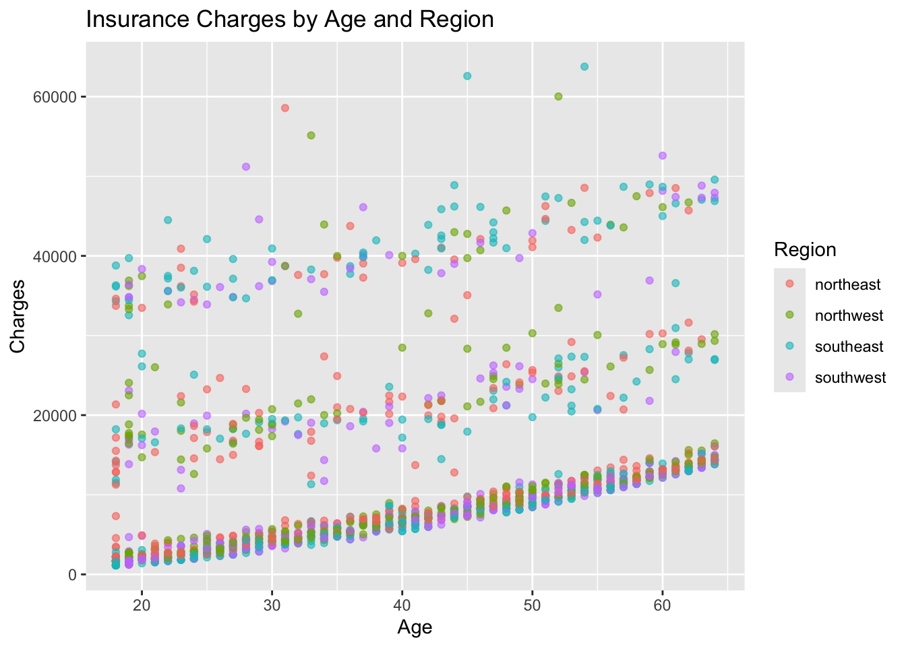
Interpretation: The positive relationship between age and charges is visible across regions. The regional groups overlap considerably, although some differences may be present.
ggplot(insurance, aes(x = bmi, y = charges, colour = region)) +
geom_point(alpha = 0.6) +
labs(
title = "Insurance Charges by BMI and Region",
x = "BMI",
y = "Charges",
colour = "Region"
)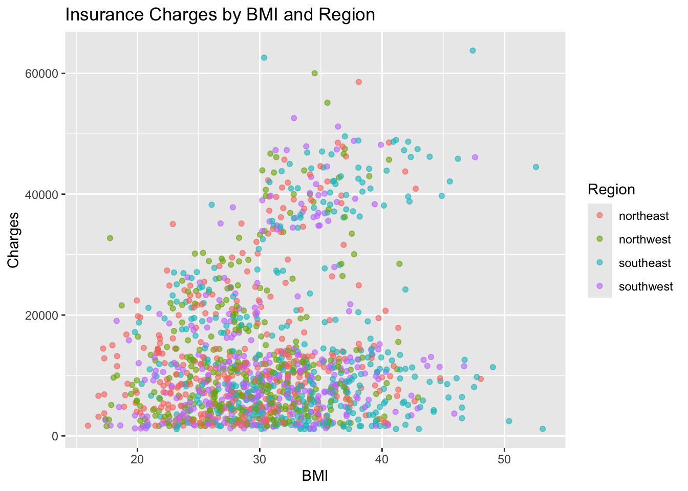
Interpretation: There is some positive association between BMI and charges, but the relationship varies considerably among observations. The regions overlap substantially.
A reasonable initial choice is to consider all six available explanatory variables:
agesexbmismokerregionchildrenThe visual exploration suggests that age, bmi, and smoker have relatively clear relationships with charges. The relationships for sex and region appear weaker when examined individually. However, this does not mean that sex or region should automatically be excluded from the regression model. Their effects may become clearer after other predictors are taken into account.
The next step is therefore to fit a regression model and examine the results rather than selecting predictors based only on individual plots.
Before fitting a regression model, examine the distribution of the response variable, charges.
charges using ggplot2.charges.ggplot(insurance, aes(x = charges)) +
geom_histogram(bins = 50) +
labs(
title = "Distribution of Insurance Charges",
x = "Charges",
y = "Count"
) +
theme_bw()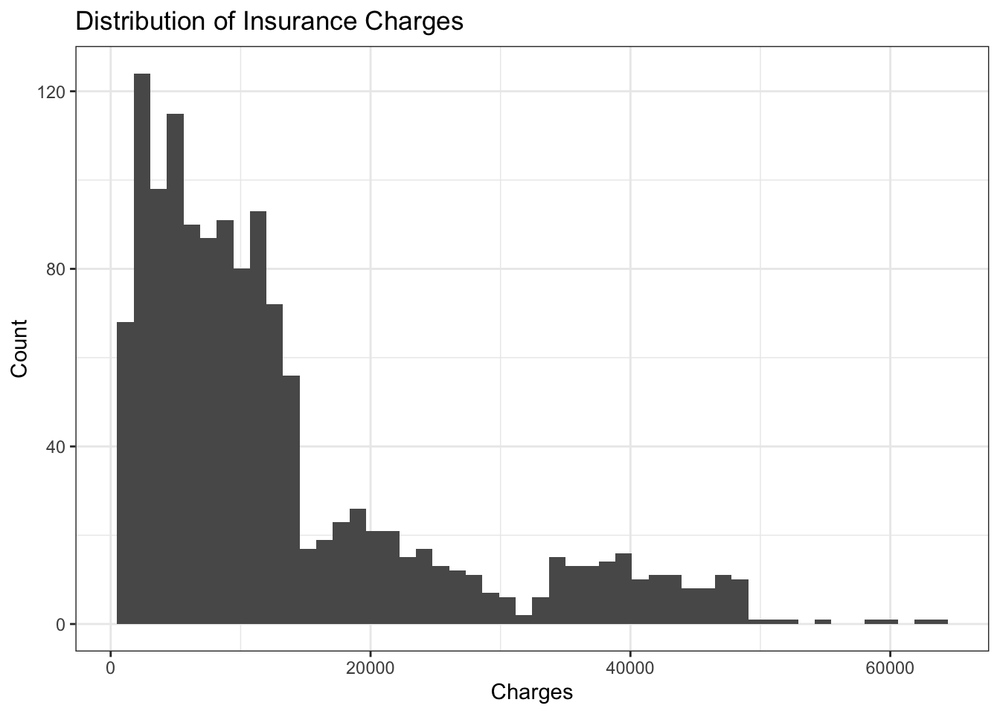
The distribution of charges is strongly right-skewed. Most observations have relatively low or moderate charges, while a smaller number of observations have much larger charges.
The histogram also shows some unusually large charges in the upper tail of the distribution. These observations are not necessarily errors. They may represent policyholders with substantial medical costs.
This pattern is important when building a regression model because unusually large observations can have a relatively strong influence on the fitted regression line and can contribute to large prediction errors.
However, the right-skewed distribution of the response variable does not by itself violate the assumptions of ordinary least squares regression. The normality assumption concerns the model errors (residuals), not the raw response variable. After fitting the model, we will examine the residuals to assess whether the model is appropriate.
In the previous section, we explored the relationship between charges and the potential predictors using summaries and visualizations. We now move from exploring relationships to building a model that describes these relationships and can be used to make predictions.
A linear regression model provides a simple way to relate an outcome variable to one or more predictors. In this chapter, our focus is primarily on prediction: we want to build a model that can make useful predictions of insurance charges for new observations.
This does not mean that the coefficients of a regression model are unimportant. They can still help us understand how the predictors are associated with the response. However, when our goal is prediction, we also need to ask an important question:
How well does the model predict observations that were not used to fit the model?
This leads to a modelling workflow in which we:
The tidymodels framework provides tools for carrying out this workflow in a consistent way. It also provides a foundation for extending the workflow to other models, preprocessing steps, and evaluation methods.
We will begin with a simple linear regression model and then use the fitted model to examine what it tells us about insurance charges.
Linear regression can be used for different purposes. In traditional statistical analysis, the focus is often on understanding associations between variables, estimating coefficients, and conducting statistical inference using tools such as confidence intervals and hypothesis tests.
In prediction-focused modelling, the emphasis is on how accurately a model can predict outcomes for new observations. Model performance on unseen data is therefore an important consideration, alongside interpretation of the model.
The tidymodels framework can support both perspectives. In this chapter, however, we will primarily adopt a prediction-focused perspective. We will build models, use them to predict insurance charges, and evaluate how well those predictions generalize to new data.
Suppose we want to predict insurance charges using the policyholder’s age. A simple linear regression model can be written as
\[ \text{charges} = \beta_0 + \beta_1\text{age} + \varepsilon, \]
where \(\beta_0\) is the intercept, \(\beta_1\) measures the change in expected charges associated with a one-year increase in age, and \(\varepsilon\) represents the remaining variation in charges that is not explained by age.
In R, we express this relationship using the formula
charges ~ ageThe formula tells us what we want to model: charges is the response variable and age is the predictor.
To build this model using tidymodels, we use the parsnip package.
parsnip?parsnip is the tidymodels package that provides a consistent way to specify and fit different types of statistical and machine-learning models. Instead of using a different set of functions for every modelling method, parsnip provides a common interface.
For example, linear_reg() is the parsnip function for specifying a linear regression model:
library(parsnip)
linear_reg()Linear Regression Model Specification (regression)
Computational engine: lm #> Linear Regression Model Specification (regression)
#>
#> Computational engine: lmThe output introduces two important terms: model specification and model engine.
A model specification describes the type of model we want to use and, when applicable, the modelling options that control how it will be fitted.
Here,
linear_reg()specifies that we want a linear regression model.
At this point, the model has not been fitted to any data. We have only described the type of model we want to use.
The formula is supplied later when we fit the model:
charges ~ ageThus, it is useful to distinguish between the two ideas:
linear_reg() → what type of model we want;charges ~ age → which outcome and predictors the model uses.Together, these tell us what model we intend to fit.
A model engine is the computational method or software implementation used to actually fit the model.
For linear regression, the default engine is "lm". This engine uses R’s standard lm() implementation to estimate the regression coefficients using ordinary least squares (OLS).
We can explicitly set the engine with set_engine():
lm_mod <- linear_reg() %>%
set_engine("lm")
lm_modLinear Regression Model Specification (regression)
Computational engine: lm The separation between the model specification and the engine is one of the useful ideas behind parsnip. We can describe the model using a consistent interface and then specify which computational implementation should be used.
For the simple linear regression in this chapter, we will use the "lm" engine and ordinary least squares. There is therefore no advantage in changing the engine at this stage. The separation becomes more useful when we work with other modelling methods and computational engines later.
Once we have specified the model, we fit it to the data. Fitting means using the observed data to estimate the unknown model parameters, such as \(\beta_0\) and \(\beta_1\).
We use the fit() function:
lm_fit <- lm_mod %>%
fit(charges ~ age, data = insurance)
lm_fitparsnip model object
Call:
stats::lm(formula = charges ~ age, data = data)
Coefficients:
(Intercept) age
3165.9 257.7 The resulting lm_fit object contains the fitted model, including the estimated coefficients and other information needed for prediction and further analysis.
The modelling process can therefore be viewed as:
\[ \boxed{ \text{Model specification} \rightarrow \text{Choose engine} \rightarrow \text{Fit to data} } \]
For this example:
linear_reg() → set_engine("lm") → fit(charges ~ age, data = insurance)The important distinction is that specifying a model is not the same as fitting a model. Specification describes what we want to fit, while fitting uses the data to estimate the model parameters.
After fitting the model, we can inspect the estimated coefficients to understand the fitted relationship between age and charges.
For the model
\[ \widehat{\text{charges}} = \hat{\beta}_0+\hat{\beta}_1\text{age}, \]
the fitted coefficients from our data are:
Call: stats::lm(formula = charges ~ age, data = data)
Coefficients:
(Intercept) age
3165.9 257.7The fitted regression equation is therefore
\[ \widehat{\text{charges}} = 3165.9+257.7\,\text{age}. \]
The intercept, \(3165.9\), is the predicted value of charges when age = 0. Although this value is part of the mathematical regression equation, age 0 is outside the meaningful range of policyholder ages in this dataset. Therefore, the intercept does not have a particularly useful practical interpretation here.
The coefficient for age, \(257.7\), is more directly useful. It means that, according to this fitted model, a one-year increase in age is associated with an estimated increase of approximately 257.7 units in insurance charges, on average.
For example, the difference in predicted charges between a policyholder aged 40 and one aged 50 is
\[ 257.7(50-40)=2{,}577. \]
Thus, the model predicts approximately $2,577 higher charges for a 50-year-old than for a 40-year-old, based on age alone.
The coefficient tells us about the estimated relationship in the fitted model. It does not mean that increasing a person’s age by one year will necessarily cause their actual insurance charges to increase by exactly 257.7. Individual charges can vary substantially because other factors are not included in this simple model.
The model output above is useful, but it is not presented in a convenient tabular form. The broom package provides the tidy() function, which converts model results into a tidy data frame. This makes the results easier to inspect, compare, and use in subsequent analysis.
library(broom)
tidy(lm_fit)# A tibble: 2 × 5
term estimate std.error statistic p.value
<chr> <dbl> <dbl> <dbl> <dbl>
1 (Intercept) 3166. 937. 3.38 7.51e- 4
2 age 258. 22.5 11.5 4.89e-29The resulting table contains information such as:
term — the model term, such as (Intercept) or age;estimate — the estimated coefficient;std.error — the standard error of the estimate;statistic — the test statistic associated with the estimate; andp.value — the p-value for testing whether the coefficient is zero.For the prediction-focused analysis in this chapter, the estimate column is particularly important because it gives the coefficients used to construct predictions. The other columns provide additional information that can be useful when we consider statistical inference.
The next step is to visualize the fitted regression line together with the observed insurance charges.
A table of regression coefficients provides precise numerical results, but a graphical representation can make the size and uncertainty of the estimates easier to compare. A dot-and-whisker plot displays each coefficient as a point together with an interval representing its uncertainty.
In the plot:
We can create a dot-and-whisker plot using the dotwhisker package:
library(dotwhisker)
library(ggplot2)
tidy(lm_fit) %>%
dwplot(
dot_args = list(color = "black"),
whisker_args = list(color = "black")
) +
geom_vline(xintercept = 0, linetype = 2) +
theme_bw() +
labs(
title = "Regression Estimates for Insurance Charges",
x = "Estimate",
y = ""
)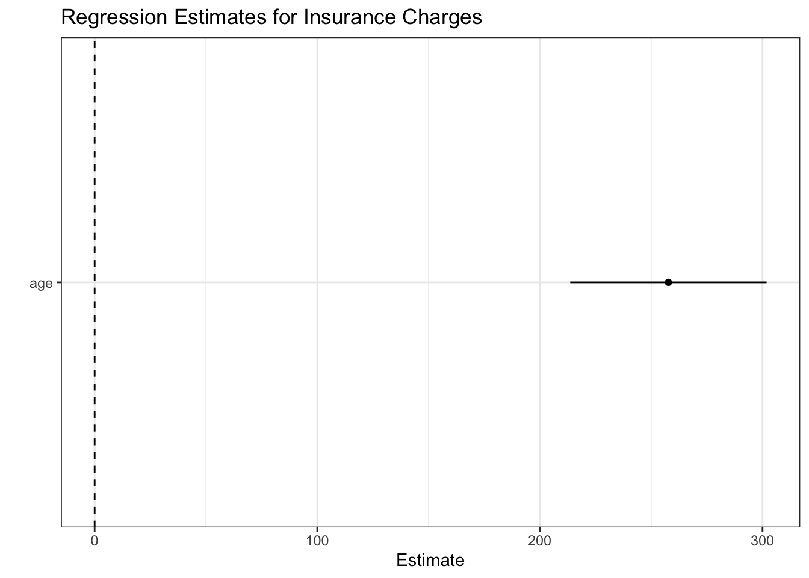
For this simple model, the estimate for age is positive, indicating that higher age is associated with higher predicted charges. The interval around the estimate is relatively narrow and does not include zero. This provides evidence of a positive association between age and charges in the data.
It is important to distinguish this interpretation from a causal statement. The regression coefficient describes the relationship captured by the fitted model; it does not establish that age itself causes charges to increase.
As we move to multiple regression models, a dot-and-whisker plot becomes particularly useful because it allows us to compare the estimated coefficients of several predictors in one figure.
A regression coefficient tells us about the relationship mathematically, but we can also visualize the model directly on the original data. The following plot shows the observed insurance charges together with the fitted regression line.
library(ggplot2)
ggplot(insurance, aes(x = age, y = charges)) +
geom_point(alpha = 0.5) +
geom_smooth(method = "lm", se = FALSE) +
theme_bw() +
labs(
title = "Insurance Charges vs Age",
x = "Age",
y = "Charges"
)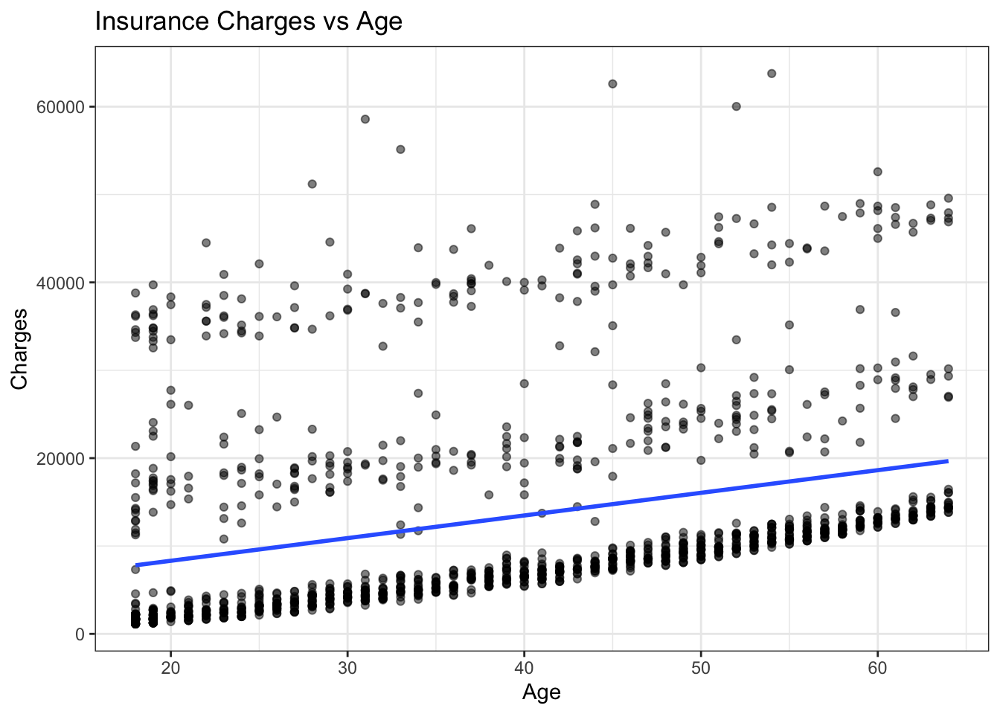
Each point represents the observed charges for one policyholder. The line represents the predicted charges from the fitted linear regression model for different values of age.
The upward slope of the line reflects the positive coefficient for age: the model predicts higher charges as age increases. The substantial vertical spread of the observations around the line also shows that age alone does not explain all the variation in insurance charges.
This distinction is important:
Thus, the plot gives us an initial visual assessment of both the relationship captured by the model and the amount of variation that remains unexplained. We will examine model predictions and residuals in more detail later.
Once a model has been fitted, we can use it to make predictions for new observations. This is one of the main purposes of building a prediction model.
The predict() function in parsnip provides a consistent interface for generating predictions from fitted models. The results are returned as a tibble, which makes them convenient to combine with the new data and use in further analysis or visualization.
Suppose we want to estimate insurance charges for policyholders aged 30, 40, and 50. We first create a dataset containing these new ages:
library(tibble)
new_points <- tibble(age = c(30, 40, 50))We can then use the fitted model to obtain the predicted mean charges:
mean_pred <- predict(lm_fit, new_data = new_points)
mean_pred# A tibble: 3 × 1
.pred
<dbl>
1 10898.
2 13475.
3 16052.The .pred column contains the predicted charges for each age.
We can also quantify the uncertainty in these estimated mean charges. A 95% confidence interval gives a range of plausible values for the mean charge associated with each age.
conf_int_pred <- predict(
lm_fit,
new_data = new_points,
type = "conf_int"
)
conf_int_pred# A tibble: 3 × 2
.pred_lower .pred_upper
<dbl> <dbl>
1 10156. 11639.
2 12854. 14096.
3 15270. 16834.The result contains three columns:
.pred — the predicted mean charge;.pred_lower — the lower limit of the 95% confidence interval; and.pred_upper — the upper limit of the 95% confidence interval.For example, if the predicted mean charge for age 40 is approximately $10,743 and its 95% confidence interval is approximately $10,110 to $11,375, this interval describes the uncertainty in the estimated average charge for policyholders of age 40.
It is important not to interpret this interval as the range in which an individual policyholder’s charge is expected to fall. Individual charges can vary substantially around the regression line. An interval for a future individual observation is called a prediction interval, which is wider because it accounts for both uncertainty in the estimated mean and the remaining individual-level variation.
In this chapter, we first use confidence intervals to illustrate uncertainty in the estimated mean response. Prediction intervals can be considered when we focus specifically on predicting an individual future observation.
Numerical predictions are useful, but a graph can make the model’s predictions and their uncertainty easier to understand. We can combine the new ages, predicted values, and confidence intervals into a single dataset.
library(dplyr)
library(ggplot2)
plot_data <- new_points %>%
bind_cols(mean_pred) %>%
bind_cols(conf_int_pred)We can then display the predicted mean charges and their 95% confidence intervals:
ggplot(plot_data, aes(x = age, y = .pred)) +
geom_errorbar(
aes(ymin = .pred_lower, ymax = .pred_upper),
width = 1
) +
geom_point(size = 3) +
geom_line() +
labs(
title = "Predicted Insurance Charges with 95% Confidence Intervals",
x = "Age",
y = "Predicted Charges"
) +
theme_bw()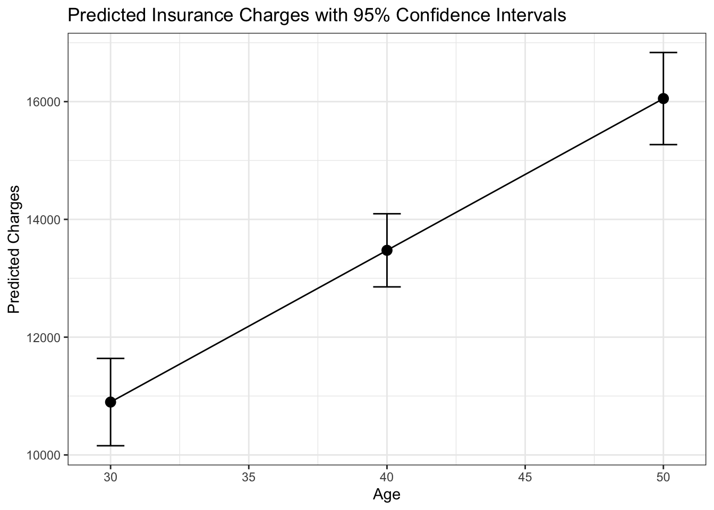
The points show the predicted mean charges, while the vertical lines show the corresponding 95% confidence intervals. The upward pattern reflects the positive relationship between age and charges estimated by the regression model.
This visualization also illustrates an important idea in prediction: a model does not simply produce a single number. Predictions can also be accompanied by a measure of uncertainty, which helps us understand how precisely the model estimates the expected outcome.
Use the fitted model lm_fit to visualize the predicted mean insurance charges across the observed range of age.
age.lm_fit to obtain the predicted mean charges and their 95% confidence intervals.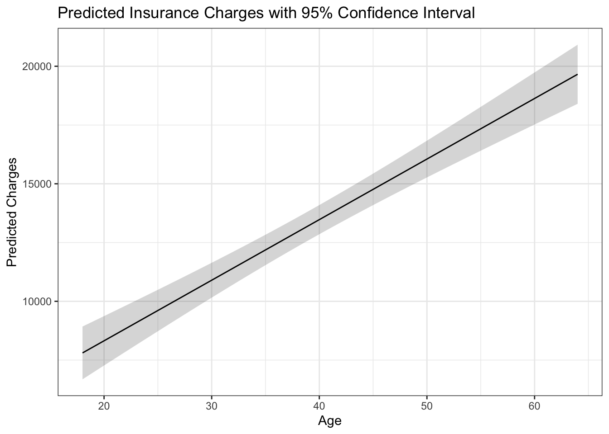
Extend the previous visualization by adding the original observations from insurance.
charges against age.ggplot(insurance, aes(x = age, y = charges)) +
geom_point(alpha = 0.4) +
geom_ribbon(
data = plot_data,
aes(
x = age,
ymin = .pred_lower,
ymax = .pred_upper
),
alpha = 0.2,
inherit.aes = FALSE
) +
geom_line(
data = plot_data,
aes(x = age, y = .pred),
inherit.aes = FALSE
) +
labs(
title = "Observed and Predicted Insurance Charges",
x = "Age",
y = "Charges"
) +
theme_bw()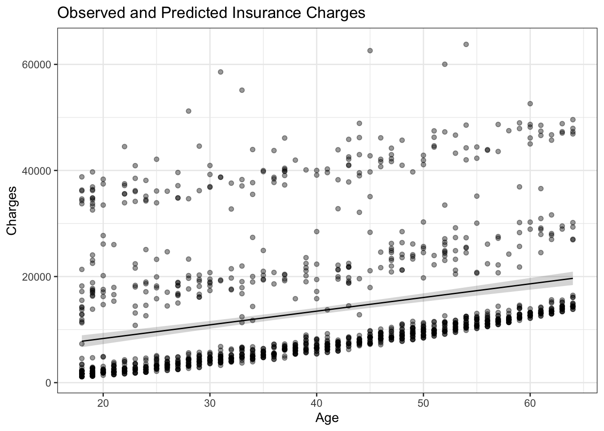
inherit.aes = FALSE?
The main ggplot() call defines the aesthetics
aes(x = age, y = charges)for the insurance dataset. By default, other layers inherit these aesthetics.
However, the prediction layers use plot_data, which contains age, .pred, .pred_lower, and .pred_upper, but does not contain charges.
Setting inherit.aes = FALSE tells ggplot2 not to inherit y = charges from the main plot. The prediction layers then use only the aesthetics specified in their own aes() calls.
In this chapter, we used a simple linear regression model to examine the relationship between age and insurance charges. We followed a complete modelling workflow:
\[ \text{Explore} \rightarrow \text{Specify} \rightarrow \text{Fit} \rightarrow \text{Interpret} \rightarrow \text{Predict} \rightarrow \text{Visualize}. \]
The fitted model provides a simple way to describe how predicted insurance charges change with age and to generate predictions for new observations. However, the observed charges show substantial variation around the fitted regression line. This indicates that age alone does not explain all of the differences in insurance charges.
Recall that the insurance dataset contains several other variables, including bmi, smoker, sex, region, and children. These characteristics may also provide information about insurance charges. A model that considers several predictors simultaneously may therefore provide a more useful representation of the relationship between policyholder characteristics and charges.
In the next chapter, we extend the simple linear regression model to multiple linear regression, allowing several predictors to be included in the same model. This will allow us to examine the contribution of each predictor while accounting for the others and to investigate whether a model using multiple characteristics can provide better predictions of insurance charges.